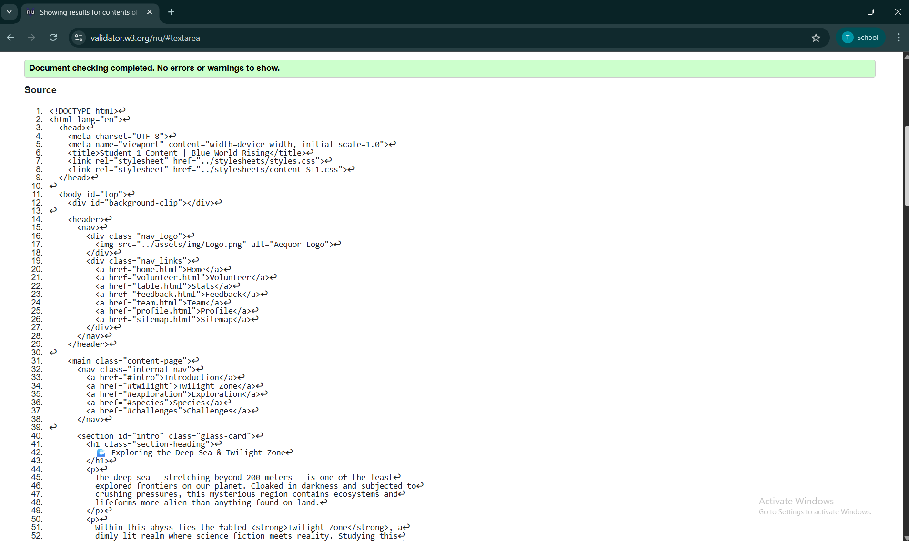

🌊 Content Page Validation
✅ Content page passed validation. Responsive images and semantic sections were recognized and compliant with HTML5 structure.
✅ All required tags validated successfully. No critical errors reported. One warning about missing fallback fonts, which is acceptable.
✅ Validation passed. Page structure and accessibility labels were well-formed. A minor alt-text warning was resolved before final submission.
✅ Content page passed validation. Responsive images and semantic sections were recognized and compliant with HTML5 structure.
Validating the pages highlighted the importance of writing semantic and standards-compliant code. I resolved initial issues related to missing alt tags and improper nesting, which improved the site’s accessibility. Validation also helped ensure cross-browser compatibility and contributed to best practices in web development.